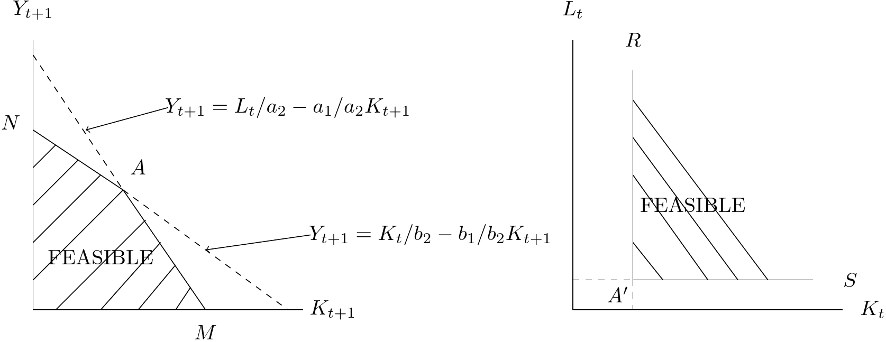

<!doctype html>
<html lang="en">

	<head>
		<meta charset="utf-8">

		<title>reveal.js - ClassHT 1</title>

		<link rel="stylesheet" href="plugin/reveal.css">
		<link rel="stylesheet" href="plugin/beige.css" id="theme">
        <link rel="stylesheet" href="plugin/monokai.css">
        <link rel="stylesheet" href="plugin/title-footer.css">
       
	</head>

	<body>

		<div class="reveal">

			<div class="slides">


                <!-- Slides are separated by three dashes (quick 'n dirty regular expression) -->
                <section data-markdown data-separator="\n---\n" data-separator-vertical="^\n--\n$">
                    <script type="text/template">
                        <!-- .slide: style="text-align: left;" -->
                        # History of Economic Analysis
                        
                        ### Francesco Franco - Nova SBE

                        ---
     

                        <!-- .slide: style="text-align: left;" -->
                        ## MARXISM
                        ### Karl Marx 1818-1883
                        

                        ---

                        <!-- .slide: style="text-align: left;" -->
                        
                        ### Background

                        References:
                        - Sandmo Agnar, Chapter 6
                        - Screpanti and Zamagni  4.3

                        Marx analysis approach differs from the previous Classics economists by **"turning away" from the scientific revolution scope
                        to have a Political Economy analyzed through rational thinking and empirical observation**. **Mark adopts an Hegelian method 
                        in which the dynamic historical context is central**.
                        
                        - The dialectics of history that showed how the bourgeoisie (capitalists) had substituted the previous feudal productive system (landlords) and
                        -  how the proletariat (workers) would substitute the capitalistic system with a communist society.
                        
                        In his analysis productive forces dynamics (think of technology) are key to spur the changes. But this will stop after the proletariat achieves predominance and an age of harmony would start.
                        
                        His focus is on the functionining of the capitalist society and not the communist society.

                        We will focus on his views of the Capitalistic system in Volume 1 and his contribution as a growth economist in Volume 2.

                        ---

                        <!-- .slide: style="text-align: left;" -->
                        ### Marx Capital 

                        <center></center>
                       
                        ---

                       
                        
                         <!-- .slide: style="text-align: left;" -->
                         #### Value and Price
                        
                         Capital, Volume 1 - Part I - chapter 1

                        >  The wealth of those societies in which the capitalist mode of production prevails, presents itself as "an immense accumulation of commodities,"
                         its unit being a single commodity. Our investigation must therefore begin with the analysis of a commodity.
                         **A commodity is, in the first place, an object outside us**, a thing that by its properties satisfies human wants
                         of some sort or another. The nature of such wants, whether, for instance, they spring from the stomach or from fancy,
                         makes no difference. Neither are we here concerned to know how the object satisfies these wants,
                         whether directly as means of subsistence, or indirectly as means of production.
                         Every useful thing, as iron, paper, &.c, may be looked at from the two points of view of quality
                         and quantity. It is an assemblage of many properties, and may therefore be of use in various ways. To
                         discover the various uses of things is the work of history. So also is the establishment of socially recognised
                         standards of measure for the quantities of these useful objects. The diversity of these
                         measures has its origin partly in the diverse nature of the objects to be measured, partly in convention.
                         The utility of a thing makes it a use-value. But this utility is not a thing of air.
                         Being limited by the physical properties of the commodity, it has no existence apart from that commodity.
                         A commodity, such as iron, corn, or a diamond, is therefore, so far as it is a material thing,
                         a use-value, something useful. This property of a commodity is independent of the amount of labour required
                         to appropriate its useful qualities.
                         Exchange-value, at first sight, presents itself as a quantitative relation, as the proportion in which values
                         in use of one sort are exchanged for those of another sort, a relation constantly changing with time and place.
                         Hence exchange-value appears to be something accidental and purely relative, and consequently an intrinsic value,
                         i.e., an exchange-value that is inseparably connected with, inherent in commodities, seems a contradiction in terms.
                         Let us consider the matter a little more closely.[...] 
                         **Let us take two commodities, e.g., corn and iron. The proportions in which they are exchangeable,
                         whatever those proportions may be, can always be represented by an equation in which a given
                         quantity of corn is equated to some quantity of iron: e.g., 1 quarter corn = x ton
                         iron. What does this equation tell us? It tells us that in two different things—in
                         1 quarter of corn and x ton of iron, there exists in equal quantities something common to both.
                         The two things must therefore be equal to a third, which in itself is neither the one nor
                         the other. Each of them, so far as it is exchange-value,
                         must therefore be reducible to this third.**

                    

                        ---

                         <!-- .slide: style="text-align: left;" -->
                         #### Value and Price
                        
                         Capital, Volume 1 - Part I - chapter 1

                         >This common “something” cannot be a geometrical, physical, chemical or other natural property
                         of commodities. Such properties come into consideration only to the extent that they make the
                         commodities useful, i.e. turn them into use-values. But clearly, the exchange relation of commodities
                         is characterized precisely by its abstraction from their use-values...
                         If then we leave out of consideration the use-value of commodities, **they have only one common property left, that of being products of labour**.
                         But even the product of labour itself has undergone a
                        change in our hands. If we make abstraction from its use-value, we make abstraction at the same time
                        from the material elements and shapes that make the product a use-value; we see in it no longer a
                        table, a house, yarn, or any other useful thing. Its existence as a material thing is put out of sight.
                        Neither can it any longer be regarded as the product of the labour of the joiner, the mason, the spinner,
                        or of any other definite kind of productive labour. Along with the useful qualities of the products
                        themselves, we put out of sight both the useful character of the various kinds of labour embodied in
                        them, and the concrete forms of that labour; there is nothing left but what is common to them all; all
                        are reduced to one and the same sort of labour, human labour in the abstract.

                        ---

                        <!-- .slide: style="text-align: left;" -->
                        #### Value and Price

                        - his theory of prices or more precisely his theory of value is a labor-embodied theory very much in the spirit of Ricardo. 

                        - After spelling out his theory of value Marx proceeds to his theory of surplus value and labor exploitation. Marx essentially defines capitalism as a system ("mode of production") designed for capital accumulation rather than consumption.


                        In more primitive systems, farmers and artisans produced commodities to exchange them for money to buy other commodities that better fit their consumption needs (C-M-C).
                        
                        In capitalism, by contrast, the production of commodities for exchange is merely an intermediary step in a process initiated by capitalists in order to make more money, what he calls the "circuit of capital" (M-C-M').
                        
                        That is, capitalists use money (M) to buy labor power and raw materials, which are then transformed by production into commodities (C) which are then sold for a greater amount of money (M'). 

                        ---

                        <!-- .slide: style="text-align: left;" -->
                        #### Transformation from feudalism to capitalism
                        
                        Capital, Volume 1 - Part II - chapter 4
  
                        > The circulation of commodities is the starting-point of capital. The production of commodities,
                          their circulation, and that more developed form of their circulation called commerce,
                          these form the historical ground-work from which it rises.
                          The modern history of capital dates from the creation in the 16th century of a world-embracing commerce and a world-embracing market.
                          As a matter of history, capital, as opposed to landed property, invariably takes the form at first of money;
                          it appears as moneyed wealth, as the capital of the merchant and of the usurer. But we have no need to refer
                          to the origin of capital in order to discover that the first form of appearance of capital is money.
                          We can see it daily under our very eyes. All new capital, to commence with, comes on the stage,
                          that is, on the market, whether of commodities, labour, or money, even in our days,
                          in the shape of money that by a definite process has to be transformed into capital.
                          **The first distinction we notice between money that is money only, and money that is capital,
                          is nothing more than a difference in their form of circulation**. The simplest form of the circulation of commodities is **C—M—C**,
                          the transformation of commodities into money, and the change of the money back again into commodities;
                          or selling in order to buy. But alongside of this form we find another specifically different form: **M—C—M** ,
                          the transformation of money into commodities, and the change of commodities back again into money;
                          or buying in order to sell. Money that circulates in the latter manner is thereby transformed into,
                          becomes capital, and is already potentially capital....
                          The simple circulation of commodities— selling in order to buy—is a means of carrying out a purpose
                          unconnected with circulation, namely, the appropriation of use-values, the satisfaction of wants.
                          **The circulation of money as capital is, on the contrary, an end in itself**, for the expansion of value takes
                          place only within this constantly renewed movement. The circulation of capital has therefore no limits....
                          As the conscious representative of this movement, the possessor of money becomes a capitalist.
                          His person, or rather his pocket, is the point from which the money starts and to which it returns.
                          
  
                        ---
  
                        <!-- .slide: style="text-align: left;" -->
                        #### Transformation from feudalism to capitalism 
                          
                        Capital, Volume 1 - Part II - chapter 4
  
                          >**The expansion of value, which is the objective basis or main-spring of the circulation M—C—M',
                          becomes his subjective aim**, and it is only in so far as the appropriation of ever more and more wealth 
                          in the abstract becomes the sole motive of his operations, that he functions as a capitalist,
                          that is, as capital personified and endowed with consciousness and a will.
                          **Use-values must therefore never be looked upon as the real aim of the capitalist;
                          neither must the profit on any single transaction**. The restless never-ending process of profit-making
                          alone is what he aims at. This boundless greed after riches, this passionate chase after exchange-value,
                          is common to the capitalist and the miser; but while the miser is merely a capitalist gone mad, the capitalist
                          is a rational miser. The never-ending augmentation of exchange-value,
                          which the miser strives after, by seeking to save his money from circulation,
                          is attained by the more acute capitalist, by constantly throwing it afresh into circulation.
                          Value therefore now becomes value in process, money in process, and, as such, capital.
                          It comes out of circulation, enters into it again, preserves and multiplies itself within its circuit,
                          comes back out of it with expanded bulk, and begins the same round ever afresh.
                          M—M’, money which begets money, such is the description of Capital from the mouths of its first interpreters,
                          the Mercantilists. **Buying in order to sell, or, more accurately, buying in order to sell dearer, M—C—M’**,
                          appears certainly to be a form peculiar to one kind of capital alone, namely, merchants’ capital.
                          But industrial capital too is money, that is changed into commodities, and by the sale of these commodities,
                          is re-converted into more money. The events that take place outside the sphere of circulation,
                          in the interval between the buying and selling, do not affect the form of this movement.
                          **Lastly, in the case of interest- bearing capital, the circulation M—C—M’ appears abridged.
                          We have its result without the intermediate stage, in the form M—M’**,
                          “en style lapidaire” so to say, money that is worth more money, value that is greater than itself.
                          M—C—M’ is therefore in reality the general formula of capital as it appears prima facie within the
                          sphere of circulation.
  
                          Here $\Delta M = M'-M$ is the surplus value.
  
                        ---
                        <!-- .slide: style="text-align: left;" -->
                        #### Engine of capitalism is competition and technology


                        The drive for surplus emerged out of necessity - capitalists had an urgent need accumulate money in order to reinvest in the latest
                        technology or risk being undercut and wiped out by other capitalists.
                        
                        It was cut-throat competition, not mere greed, that forced capitalists to strive towards profits, and turned production towards the generation of profit, rather than the satisfaction of needs.
                        
                        But of course, it was a short-term gain - for although a new piece of cost-reducing technology may yield extraordinary profits for a particular capitalist, it is only temporary, as other capitalists will adopt it too, and the profit rate will be driven back down.

                        ---
                        ---
                        <!-- .slide: style="text-align: left;" -->
                        #### Surplus produce through labor exploitation

                        While the dynamism of capitalism is the central story of *Capital*, it is all built on the exploitation of workers.
                        
                        And it is this part of the story that is most associated with Marx's thought.
                        
                        While M-C-M' may seem straightforward, Marx identifies a puzzle: how is this increase in value, from M to M', achieved?
                        
                        Having embraced Ricardo's labor theory of value most insistently - that is, that labor-embodied is the only source of value - then the exchange process cannot increase value.
                        
                        Instead, Marx turns to examining the production process, and identifies "labor power" (as distinct from labor) as the only input which has the capacity to create greater value than it costs the capitalist to hire.
                        
                        It is this difference that the creates surplus and thus profits.

                        ---

                        <!-- .slide: style="text-align: left;" -->

                         Capital, Volume 1 - Part II - chapter 6

                         > The change must, therefore, take place in the commodity bought by the first act, M—C, but not in its
                         value, for equivalents are exchanged, and the commodity is paid for at its full value. We are,
                         therefore, forced to the conclusion that the change originates in the use-value, as such, of the
                         commodity, i.e., in its consumption. In order to be able to extract value from the consumption of a
                         commodity, our friend, Moneybags, must be so lucky as to find, within the sphere of circulation, in the
                         market, a commodity, whose use-value possesses the peculiar property of being a source of value,
                         whose actual consumption, therefore, is itself an embodiment of labour, and, consequently, a creation
                         of value. **The possessor of money does find on the market such a special commodity in capacity for labour or labour-power**.
                         By labour-power or capacity for labour is to be understood the aggregate of those mental and physical capabilities existing in a human being,
                         which he exercises whenever he produces a use- value of any description.[...] 
                         He and the owner of money meet in the market, and deal with each other as on the basis of equal rights,
                         with this difference alone, that one is buyer,
                         the other seller; both, therefore, equal in the eyes of the law.[...]
                         The second essential condition to the owner of money finding labour-power
                         in the market as a commodity is this—that the labourer instead of being in the position
                         to sell commodities in which his labour is incorporated, must be obliged
                         to offer for sale as a commodity that very labour-power, which exists only
                         in his living self. [...]One thing, however, is clear—Nature does not produce on the one side owners of money or commodities, and on
                         the other men possessing nothing but their own labour-power. This relation has no natural basis,
                         neither is its social basis one that is common to all historical periods. It is clearly the result of a past
                         historical development, the product of many economic revolutions, of the extinction of a whole series
                         of older forms of social production. … Capital, therefore, announces from its first appearance a new
                         epoch in the process of social production.
                         
                        ---

                        
                        <!-- .slide: style="text-align: left;" -->

                        #### Labor power
                         
                        The critical part of the labor exploitation story is that workers are paid full competitive wages, but that labor works more hours than what is needed to cover the wage bill.
                        
                        The competitive wage is kept low  by the existence of a vast pool of unemployed.
                        
                        Capital, Volume 1 - Part II - chapter 7

                         > **By the purchase of labour-power, the capitalist incorporates labour, as a living ferment,
                         with the lifeless constituents of the product**. From his point of view,
                         the labour-process is nothing more than the consumption of the commodity purchased,
                         i.e., of labour-power; but this consumption cannot be effected except by supplying
                         the labour-power with the means of production. The labour-process is a process between
                         things that the capitalist has purchased, things that have become his property.
                         The product of this process belongs, therefore, to him, just as much as does the wine
                         which is the product of a process of fermentation completed in his cellar.

                         > **The fact that half a day’s labour is necessary to keep the labourer alive during 24 hours,
                         does not in any way prevent him from working a whole day.**
                         Therefore, the value of labour-power, and the value which that labour-power
                         creates in the labour-process, are two entirely different magnitudes;
                         and this difference of the two values was what the capitalist had in view,
                         when he was purchasing the labour-power. The useful qualities that labour-power possesses,
                         and by virtue of which it makes yarn or boots, were to him nothing more than a conditio
                         sine qua non; for in order to create value, labour must be expended in a useful manner.
                         What really influenced him was the specific use-value which this commodity possesses
                         of being a source not only of value, but of more value than it has itself.

                        ---

                         <!-- .slide: style="text-align: left;" -->
                         #### The reserve army

                         Capital, Volume 1 - Part II - chapter 15

                         > **The whole system of capitalist production is based on the fact that the workman
                         sells his labour-power as a commodity**. Division of labour specialises this labour-power,
                         by reducing it to skill in handling a particular tool.
                         So soon as the handling of this tool becomes the work of a machine,
                         then, with the use-value, the exchange-value too, of the workman’s
                         labour-power vanishes; the workman becomes unsaleable, like paper money thrown out
                         of currency by legal enactment. **That portion of the working-class,
                         thus by machinery rendered superfluous, i.e., no longer immediately necessary
                         for the self-expansion of capital, either goes to the wall in the unequal contest
                         of the old handicrafts and manufactures with machinery, or else floods all the more easily
                         accessible branches of industry, swamps the labour-market, and sinks the price
                         of labour-power below its value**.

                         
                         > The labouring population therefore produces, along with the accumulation of capital produced by
                         it, the means by which it itself is made relatively superfluous, is turned into a relative surplus
                         population; and it does this to an always increasing extent. This is a law of population peculiar to the
                        capitalist mode of production[...]. But if a surplus labouring population is a necessary product of accumulation
                         or of the development of wealth on a capitalist basis, this surplus-population becomes,
                         conversely, the lever of capitalistic accumulation, nay, a condition of existence
                         of the capitalist mode of production. **It forms a disposable industrial reserve army,
                         that belongs to capital quite as absolutely as if the latter had bred it at its own cost.**
                         Independently of the limits of the actual increase of population, it creates, for the
                         changing needs of the self-expansion of capital, a mass of human material always ready
                         for exploitation.[...]
                         **The more extensive, finally,the lazarus-layers of the working- class,
                         and the industrial reserve army, the greater is official pauperism.
                         This is the absolute general law of capitalist accumulation.**

                         The subsistence wage is pinned down in Marx view by the existence of the reserve army of unemployed. And immeseration
                         of the working class appears to be the "absolute general law" of capitalism.

                        ---

                         <!-- .slide: style="text-align: left;" -->
                         #### The decrease in the profit rate and the avent of communism

                         Marx continues his analysis by foreseeing a continuing increase in the concentration of capital, leading to an incompatibility with the functioning of the market economy and therefore, its replacement by an alternative social arrangement

                         Capital, Volume 1 - Part II - chapter 32

                         > **As soon as this process of transformation has sufficiently decomposed
                         the old society from top to bottom**, as soon as the labourers are turned into proletarians,
                         their means of labour into capital, as soon as the capitalist mode of production stands
                         on its own feet, then the further socialisation of labour and further transformation
                         of the land and other means of production into socially exploited and, therefore,
                         common means of production, as well as the further expropriation of private proprietors,
                         takes a new form. **That which is now to be expropriated is no longer the labourer working
                         for himself, but the capitalist exploiting many labourers.** This expropriation is accomplished
                         by the action of the immanent laws of capitalistic production itself, by the centralisation
                         of capital. **One capitalist always kills many**.Hand in hand with this centralisation, or this expropriation of many
                         capitalists by few, develop, on an ever-extending scale, the co-operative form of the labour-process,
                         the conscious technical application of science, the methodical cultivation of the soil, the
                         transformation of the instruments of labour into instruments of labour only usable in common, the
                         economising of all means of production by their use as the means of production of combined,
                         socialised labour, the entanglement of all peoples in the net of the world-market, and with this, the
                         international character of the capitalistic régime.
                         Along with the constantly diminishing number of the magnates of capital,
                         who usurp and monopolise all advantages of this process of transformation,
                         grows the mass of misery, oppression, slavery, degradation, exploitation;
                         but with this too grows the revolt of the working-class, a class always increasing in numbers,
                         and disciplined, united, organised by the very mechanism of the process of capitalist production itself.
                         **The monopoly of capital becomes a fetter upon the mode of production**,
                         which has sprung up and flourished along with, and under it.
                         **Centralisation of the means of production and socialisation of labour at last reach a point where
                         they become incompatible with their capitalist integument**. Thus integument is burst asunder.
                         The knell of capitalist private property sounds. **The expropriators are expropriated**.

                        ---


                         <!-- .slide: style="text-align: left;" -->
                         #### Economic Growth

                         Capital, Volume 2 - Part I - chapter 20

                         > The question that confronts us directly is this: **How is the capital consumed
                         in production replaced in value out of the annual product and how does the movement
                         of this replacement intertwine with the consumption of the surplus-value by the capitalists
                         and of the wages by the labourers?**

                         > **The total product**, and therefore the total production, of society **may be divided into two major departments**: I. **Means of Production**, commodities having a form in which they must, or at least may, pass into productive consumption.
                         II. **Articles of Consumption**, commodities having a form in which they pass into the individual consumption of the capitalist and the working-class.
                         

                        > In each department the capital consists of two parts:
                        I) **Variable Capital**. This capital, so far as its value is concerned, is equal to the value
                         of the social labour-power employed in this branch of production; in other words,
                         **it is equal to the sum of the wages paid for this labour-power**.
                         So far as its substance is concerned, it consists of the labour-power in action, i.e., 
                         of the living labour set in motion by this capital-value.
                        2) **Constant Capital**. This is **the value of all the means of production employed
                        for productive purposes in this branch**. These, again, are divided into fixed capital,
                        such as machines, instruments of labour, buildings, labouring animals, etc., 
                        and circulating constant capital, such as materials of production:
                        raw and auxiliary materials, semi-finished products, etc.

                        ---

                         <!-- .slide: style="text-align: left;" -->
                         #### Economic Growth

                         Capital, Volume 2 - Part I - chapter 20

                         > The value of the total annual product created with the aid of this capital
                         in each of the two departments consists of one portion which represents the constant capital **C**
                         consumed in the process of production and only transferred to the product in accordance with
                         its value, and of another portion added by the **entire labour of the year**.
                         This latter portion is divided in turn into the replacement of the advanced variable capital
                         **V** and the excess over and above it, which forms the surplus-value **S**. And just as the value
                         of every individual commodity, that of the entire annual product of each department consists
                         of **C + V + S**.

                         > At this point in the study of the total social product and of its value, however,
                         we are compelled, at least for the present, to leave out of account that portion of value
                         which is transferred from the fixed capital to the annual product by wear and tear,
                         unless fixed capital is replaced in kind during the year. In one of the following sections
                         of this chapter we shall discuss this point in particular. We shall base our study
                         of simple reproduction on the following scheme, in which **C** stands for constant capital,
                        **V** for variable capital, and **S** for surplus-value, assuming the rate of surplus-value
                         **S/V** to be 100 per cent. The figures may indicate millions of marks, francs, or pounds sterling.... 

                         |Recapitulation: Total annual commodity-product|
                         |----------------------------------------------|
                         |I. 4,000 C + 1,000 V + 1,000 S = 6,000 means of production|
                         |II. 2,000 C + 500 V + 500 S = 3,000 articles of consumption|

                        ---

                         <!-- .slide: style="text-align: left;" -->
                         #### Economic Growth - the law of the tendency of the rate of profit to fall

                         Capital, Volume 3 - Part III - chapter XIII

                         >  ...The rate of surplus-value, **S/V**, would = 100%. But, as we have seen, this rate of surplus-value would nonetheless
                          express itself in very different rates of profit, depending on the different volumes of constant capital **C** and consequently of the total capital
                          **K**, because the rate of profit = **S/K**. The rate of surplus-value is 100%:
                         If c = 50, and v = 100, then p' = 100/150 = 66.6%; c = 100, and v = 100, then p' = 100/200 = 50%;
                         c = 200, and v = 100, then p' = 100/300 = 33.3%; c = 300, and v = 100, then p' = 100/400 = 25%;
                         c = 400, and v = 100, then p' = 100/500 = 20%.
                         **This is how the same rate of surplus-value would express itself under the same degree of labour exploitation in a falling rate of profit**,
                         because the material growth of the constant capital implies also a growth -- albeit not in the same proportion -- in its value, and consequently 
                         in that of the total capital.... 
                         then the gradual growth of constant capital in relation to variable capital must necessarily lead to a gradual fall of the general rate of profit, so long as the rate of surplus-value, or the intensity of exploitation of labour by capital, remain the same. 

                        ---


                         <!-- .slide: style="text-align: left;" -->
                         #### Marx in a mathematical model
                         ##### Description

                        One of Marx's interesting analytical contribution to economic theory is the 2 sectors model in Book 2 that links
                        him directly with Leontief and Harrod growth
                        theory. We follow Samuelson (1957) in presenting it:

                        - time is discrete $t$

                        - 2 Sectors:
                            - sector 1: $I$ investment goods sector (physical machines) produces $K$
                            - sector 2: $C$ consumption good sector produces $Y$

                        - Labor across industries is homogenous $L_{t}\geqq L_{1,t}+L_{2,t}$

                        - Capital across industries is homogenous $K_{t}\geqq K_{1,t}+K_{2,t}$

                        The inequalities reflect the fact that one input might be redundant in supply.

                        ---

                         <!-- .slide: style="text-align: left;" -->
                         #### Marx in a mathematical model

                         ##### Description

                        - Production requires one period (time to build).

                        - Technology in the two sectors can be desribed as 
                        
                        $$K_{t+1}=F\left(L_{1,t},K_{1,t}\right)$$
                        $$Y_{t+1}=f\left(L_{2,t},K_{2,t}\right)$$
                            
                        where the productions
                        functions $F$ and $f$ are of the fixed-coefficient type:

                        $$K_{t+1}=min\left(\frac{L_{1,t}}{a_{1}},\frac{K_{1,t}}{b_{1}}\right)$$
                        $$Y_{t+1}=min\left(\frac{L_{2,t}}{a_{2}},\frac{K_{2,t}}{b_{2}}\right)$$

                        If there is more labour available (or more capital) then it goes to waste.

                        ---

                         <!-- .slide: style="text-align: left;" -->
                        

                         ##### Production possibilities
                         Marx thinks in aggregate terms so let us derive the total production

                         From the production function of sector 1 write $K_{t+1}\leqq\frac{L_{1,t}}{a_{1}}$
                          and $K_{t+1}\leqq\frac{K_{1,t}}{b_{1}}$ which are equivalent to
                          
                          $$L_{1,t}\geqq a_{1}K_{t+1}\ \ \ K_{1,t}\geqq b_{1}K_{t+1}$$

                          similarly for the second sector:

                          $$L_{2,t}\geqq a_{2}Y_{t+1}\ \ \ K_{2,t}\geqq b_{2}Y_{t+1}$$

                        summing
                        factors requirements, i.e., $L_{1,t}+ L_{2,t}$: $$a_{1}K_{t+1}+a_{2}Y_{t+1}\leqq L_{t}$$
                        $$b_{1}K_{t+1}+b_{2}Y_{t+1}\leqq K_{t}$$

                        which represent the economy production possibilities.

                        ---

                         <!-- .slide: style="text-align: left;" -->
                       

                         ##### Production possibilities

                        Given $K_{t}$ and $L_{t}$ this can be portrayed as in the left panel which shows
                        what can be produced with the given inputs and
                        Given production of $K_{t+1}$ and
                        $Y_{t+1}$ this is portrayed in the right panel which shows what inputs you need to produce
                        those level of outputs.

                        <center></center>

                        The relative prices $\frac{p_{2,t+1}}{p_{1,t+1}}$ (Notice the time!) must be equal to the
                        slope of the Production possibility frontier at the production point
                        actually observed. The relative prices of inputs $\frac{w_{t}}{p_{1,t}}$
                        can be any non negative number.

                        ---

                         <!-- .slide: style="text-align: left;" -->
                       
                         ##### Simple Reproduction (stationary state)

                        To simplfy let us focus on the stationary state without growth that Mark calls simple reproduction.
                        Assume $L$ fixed and that capital
                        $K$ will accomodate to the supply of labor, namely that the economy
                        reaches point $A$ where no input is redundant and therefore free.
                        Therefore $p_{1},p_{2},w$ are positive. Simple reproduction implies
                        $$L_{t}=L_{t+1}=...=L$$ $$K_{t}=K_{t+1}=...=K$$ $$Y_{t}=Y_{t+1}=...=Y$$
                        and $$a_{1}K+a_{2}Y=L$$ $$b_{1}K+b_{2}Y=K$$

                        ---

                         <!-- .slide: style="text-align: left;" -->
                         

                         ##### aggregate NNP

                        Solving, the labor input equilibrium gives:
                        $$K=\frac{1}{a_{1}}L-\frac{a_{2}}{a_{1}}Y$$ the capital input
                        equilibrium gives: $$Y=\left(\frac{1-b_{1}}{b_{2}}\right)K$$ combining
                        we get aggregate consumption goods: $$Y=\frac{1-b_{1}}{a_{1}b_{2}+\left(1-b_{1}\right)a_{2}}L$$ and aggregate production of investment goods:
                        $$K=\frac{b_{2}}{a_{2}\left(1-b_{1}\right)+a_{1}b_{2}}L$$

                        We see that the national product is $Y$ and proportional to $L$.  $K$
                        goes into the gross product but being an intermediate good needed to
                        produce final consumption goods it is not included in NP.

                        ---

                         <!-- .slide: style="text-align: left;" -->
                        
                         ##### Values
                         Now let us turn to prices, wages and profit rate to analyze the possibility of capital "expropriating" labour.

                        Remember that production takes one period (even if we are in the
                        stationary state). Take $r$ the market profit rate (interest rate) **as given** (we will see later how to determine it) and assume
                        (CRS of our min produciton function are coherent with this) competition among producers, investors,
                        workers and owner of capital good. Then (the unit price od each good)
                        $$p_{1}=\left(wa_{1}+p_{1}b_{1}\right)\left(1+r\right)$$
                        $$p_{2}=\left(wa_{2}+p_{1}b_{2}\right)\left(1+r\right)$$ Solve the first
                        for $\frac{p_{1}}{w}$
                        $$\frac{p_{1}}{w}\left(1-\left(1+r\right)b_{1}\right)=a_{1}\left(1+r\right)$$
                        $$\frac{p_{1}}{w}=\frac{a_{1}\left(1+r\right)}{\left(1-\left(1+r\right)b_{1}\right)}$$

                        ---

                         <!-- .slide: style="text-align: left;" -->
                        

                         ##### Values

                        now use in the second
                        $$\frac{p_{2}}{w}=\left(a_{2}+\frac{p_{1}}{w}b_{2}\right)\left(1+r\right)$$
                        $$\frac{p_{2}}{w}=\left(a_{2}+\frac{a_{1}\left(1+r\right)}{\left(1-\left(1+r\right)b_{1}\right)}b_{2}\right)\left(1+r\right)$$
                        $$\frac{p_{2}}{w}=\frac{a_{2}\left(1+r\right)\left(1-\left(1+r\right)b_{1}\right)+a_{1}b_{2}\left(1+r\right)\left(1+r\right)}{\left(1-\left(1+r\right)b_{1}\right)}$$

                        which is the inverse of the real wage in terms of consumption goods.
                        When $r=0$ we can see that $$\frac{w}{p_{2}}=\frac{Y}{L}$$ but
                        $\frac{Y}{L}$ does not consider the time to production and if supply and
                        demand among investors commands a positive $r$ the workers will ony
                        receive the discounted productivity. Therefore the difference between the two is not due here 
                        to exploitation but to discount. A matter of interpretation....
                        
                        ---

                         <!-- .slide: style="text-align: left;" -->
                        

                         ##### Labour theory of Value ?
                        
                        Note that the relative price of
                        two goods $\frac{p_{2}}{p_{1}}$ will not be proportional to their labor
                        content $\frac{L_2}{L_1}$ if $r$ is positive.
                        $$\frac{p_{2}}{p_{1}}=\frac{a_{2}\left(1+r\right)\left(1-\left(1+r\right)b_{1}\right)+a_{1}b_{2}\left(1+r\right)\left(1+r\right)}{a_{1}\left(1+r\right)}$$
                        $$\frac{L_{1}+L_{2}}{L_{1}}=\frac{a_{2}\left(1-b_{1}\right)+a_{1}b_{2}}{a_{1}}$$
                        Notice that 
                        a change in $r$ will change all relative
                        prices. Here the theory of value contains the value of K like in Ricardo (and Smith). So difficult to reconcile with pure labour theory.

            

                        ---

                         <!-- .slide: style="text-align: left;" -->
                       

                         ##### Surplus

                        The map between Marxian terminology and what we have dreived.

                        Remember that $$L_{1}=a_{1}K$$ and $$K_{1}=b_{1}K$$ 
                        If we compute the exchange value of of the two goods we have:
                        $$p_{1}K=\left(wL_{1}+p_{1}K_{1}\right)\left(1+r\right)$$ and
                        $$p_{2}Y=\left(wL_{2}+p_{1}K_{2}\right)\left(1+r\right)$$
                        
                        ---

                         <!-- .slide: style="text-align: left;" -->
                       

                         ##### Surplus
                        
                        In
                        Marxian terminology we can write $C_{1}=p_{1}K_{1}$, the constant
                        capital, and $V_{1}=wL_{1}$ as variable capital and
                        $S_{1}=p_{1}K-C_{1}-V_{1}$, the surplus value, namely the difference
                        between the capital industry sales and the constant and variable
                        capitals. So we can write $$p_{1}K=C_{1}+V_{1}+S_{1}$$
                        $$p_{2}Y=C_{2}+V_{2}+S_{2}$$

                        ---

                         <!-- .slide: style="text-align: left;" -->
                        

                         ##### equalization of Surplus value

                        Marx assumes equal rates of surplus value in
                        different industries namely $S_{1}/V_{1}=S_{2}/V_{2}$ which we can see
                        is generally not true

                        <span>
                            \[\begin{aligned}
                            \frac{S_{1}}{V_{1}} &=\frac{p_{1}K-C_{1}-V_{1}}{V_{1}} \\
                            &=\frac{\left(wL_{1}+p_{1}K_{1}\right)\left(1+r\right)-p_{1}K_{1}-wL_{1}}{wL_{1}} \\
                            &=\frac{r\left(wL_{1}+p_{1}K_{1}\right)}{wL_{1}}=\frac{r\left(wa_{1}+p_{1}b_{1}\right)}{wa_{1}} \\
                            &=r+r\frac{p_{1}}{w}\frac{b_{1}}{a_{1}}=\frac{r}{1-b_{1}\left(1+r\right)}
                            \end{aligned} \]
                        <span> 

                       
                        similarly
                        $$\frac{S_{2}}{V_{2}}=\frac{S_{1}}{V_{1}}+r\frac{p_{1}}{w}\left(\frac{b_{2}}{a_{2}}-\frac{b_{1}}{a_{1}}\right)$$

                        so only in the very fortituitous case
                        $\frac{b_{2}}{a_{2}}=\frac{b_{1}}{a_{1}}$this would be true. Or when $r=0$ and therefore there are no profits.

                        

                        ---

                         <!-- .slide: style="text-align: left;" -->
                        

                         ##### Incompatibility of Falling Profit and Falling Real Wage (or constant).

                                               
                        Before moving to growth another contradiction exists: along with the “law of the falling rate of profit,”
                        Marxian economists often speak of the “law of the falling (or constant) real wage of labor.” 
                                                
                        well if
                        $r$ decreases

                        $$\frac{w}{p_{2}}=\frac{\left(1-\left(1+r\right)b_{1}\right)}{a_{2}\left(1+r\right)\left(1-\left(1+r\right)b_{1}\right)+a_{1}b_{2}\left(1+r\right)\left(1+r\right)}$$
                        increases\...

                        for future reference notice $\frac{w}{p_{2}}=\omega(r,a_1,a_2,b_1,b_2)$ where you see that $r$ influences $w$.

                        Until now nothing determines $r$. Notice that the notes end here, what follows is really an attepmt to close the model to determine r, but goes well beyond what Mark had in his Volume 2.


                        ---

                        <!-- .slide: style="text-align: left;" -->
                       

                        ##### Model with growth "expanded production"

                        Growth that maintains the fixed-proportion assumption can only be of the exponential type. (not a very appealing feature of our math)

                        Simple growth implies
                        $$L_{t+1}=(1+m)L_{t}=...=L_{0}(1+m)^t$$
                        $$K_{t+1}=(1+m)K_{t}=...=K_{0}(1+m)^t$$
                       
                        and $$a_{1}(1+m)K_{t}+a_{2}Y_{t+1}=L_{t}$$
                        $$b_{1}(1+m)K_{t}+b_{2}Y_{t+1}=K_{t}$$

                        which implies 

                        $$Y_{t+1}=\frac{1-b_{1}(1+m)}{a_{2}\left[1-b_{1}(1+m)\right]+a_{1}b_{2}(1+m)}L_{t}$$ and
                        $$K_{t}=\frac{b_{2}}{a_{2}\left[1-b_{1}(1+m)\right]+a_{1}b_{2}(1+m)}L_{t}$$

                        ---

                        <!-- .slide: style="text-align: left;" -->
                       
                        ##### Model with growth "expanded production"

                        Here the positive growth rate $m$ acts to blow up $b_1$ and $a_1$ into
                        $(1+m)b_1$ and $(1+m)a_1$ but $b_2$ and $a_2$ are not affected. So the economy needs to accumulate capital and must save above the simple reproduction.

                        Marx did not complete really this part of the analysis. Later (Harrod-Domar) tried to get what determine
                        the growth rate $m$. Namely the savings compatible with this "warranted rate of growth".

                        This is a complicated issue that goes well beyond what is found in the Capital and maybe not really
                        what Marx had in mind **but necessary to have a determined model**.

                        ---

                         <!-- .slide: style="text-align: left;" -->
                        

                         ##### Model with growth "expanded production" with later features

                        Assume each group saved a constant proportion (savings behavior) of its income at all times, say $\sigma_w$ 
                        or workers and $\sigma_r$ for interest receivers.
                        Also Define the fraction of income $I$ (distribution) that goes to wages $k_w=\frac{Income_w}{Income}$ and to interest $k_r=1-k_w$.
                        Then the average propensity to save is $$\frac{Saving}{Income} = \sigma = k_w\sigma_w + k_r\sigma_r$$

                        ---

                        <!-- .slide: style="text-align: left;" -->
                       

                        ##### Model with growth
                        
                        Now the necessary saving is 
                        $$K_{t+1}-K_{t}=Saving_{t}$$

                        $$mK_{t}=Saving_{t}$$

                        $$ m\frac{K_{t}}{Income_{t}}=\frac{Saving_{t}}{Income_{t}}$$

                        $$ m\beta=\sigma$$

                        where $m$ solves  $$ m\beta(m,r)=\sigma(m,r)$$

                        $\beta$ is known as the accelerator coefficient.
                    
                        

                        ---

                        <!-- .slide: style="text-align: left;" -->
                       


                        ##### Model with growth

                        The accelerator $\beta$ and the distribution-of-income coefficients depend on $m$ as well as on $r$ because:
                        1. the relative share of wages differs in the 2 industries,and each different $m$ will change the relative importance of the two industries.
                        2. each different $r$ will change the values of the assets to which $r$ is applied think of $r(wL_1+wL_2+p_1K_1+p_1K_2)$.

                        The system has a well determinated solution with a free variable $r$ (or $w$). So what can we say regarding
                        the tendency of the rate of profit?
                        
                        In this stable case where $L$ and $K$ grow at the warranted rate we miss one equation to say something. But let us see when factor do not grow at the same rate.

                        ---

                        <!-- .slide: style="text-align: left;" -->
                        


                        ##### Model with growth and changing factors

                        1. If $L$ grows faster than $K$ with constant prices $w$ falls to 0 and $$p_{1}=\left(0a_{1}+p_{1}b_{1}\right)\left(1+r\right)$$
                        $$p_{2}=\left(0a_{2}+p_{1}b_{2}\right)\left(1+r\right)$$ threfore
                        $$1+r=\frac{1}{b_1}$$ 
                        $$\frac{p_2}{p_1}=\frac{b_2}{b_1}$$
                        in this case the interest rate, which is now the net-reproductive-rate of machines, must,
                        so long as any of them are being produced, be determinable by technology alone quite independently of all time preferences.
                        In this case profits do not decrease.

                        2. If $K$ grows faster than $L$ then (in the case of $b_1/a_1 = b_2/a_2$)
                        $$p_{2}=\left(wa_{2}+0b_{2}\right)\left(1+r\right)$$ and we need  further equations to determine the equilibrium. But now we must stop.

                        ---

                        
                        <!-- .slide: style="text-align: left;" -->
                        ### References

                       
                        - Heilbroner, R. L. (1996). Teachings from the worldly philosophy. New York, W.W. Norton.

                        - Marx, K., & Engels, F. (1867,1884,1895). Capital; a critique of political economy. New York, International Publishers.

                        - Screpanti, Ernesto & Zamagni, Stefano, 1995. "An Outline of the History of Economic Thought," OUP Catalogue, Oxford University Press

                        - Sandmo, Agnar.  (2011).  Economics evolving : a history of economic thought.  Princeton, N.J :  Princeton University Press.

                        - P.A. Samuelson “The Canonical Classical Model of Political Economy.” Journal of Economic Literature 16, no. 4 (1978): 1415–1434.


                    </script>
                </section>

            </div>
		</div>

		<script src="plugin/reveal.js"></script>
        <script src="plugin/markdown.js"></script>
        <script src="plugin/highlight.js"></script>
        <script src="plugin/notes.js"></script>
        <script src="plugin/plugin.js"></script>
        <script src="plugin/math.js"></script>
        <script src="plugin/plugin.js"></script>
        <script src="plugin/menu.js"></script>
        <script src="plugin/pdfexport.js"></script>
		<script>

			Reveal.initialize({
				controls: true,
				progress: true,
				history: true,
                center: true,
                touch: true,

                menu: {
                    // Specifies which side of the presentation the menu will
                    // be shown. Use 'left' or 'right'.
                    side: 'left',

                    // Specifies the width of the menu.
                    // Can be one of the following:
                    // 'normal', 'wide', 'third', 'half', 'full', or
                    // any valid css length value
                    width: 'normal',

                    // Add slide numbers to the titles in the slide list.
                    // Use 'true' or format string (same as reveal.js slide numbers)
                    numbers: true,

                    // Specifies which slide elements will be used for generating
                    // the slide titles in the menu. The default selects the first
                    // heading element found in the slide, but you can specify any
                    // valid css selector and the text from the first matching
                    // element will be used.
                    // Note: that a section data-menu-title attribute or an element
                    // with a menu-title class will take precedence over this option
                    titleSelector: 'h1, h2, h3, h4, h5, h6',

                    // If slides do not have a matching title, attempt to use the
                    // start of the text content as the title instead
                    useTextContentForMissingTitles: false,

                    // Hide slides from the menu that do not have a title.
                    // Set to 'true' to only list slides with titles.
                    hideMissingTitles: false,

                    // Adds markers to the slide titles to indicate the
                    // progress through the presentation. Set to 'false'
                    // to hide the markers.
                    markers: true,

                    // Specify custom panels to be included in the menu, by
                    // providing an array of objects with 'title', 'icon'
                    // properties, and either a 'src' or 'content' property.
                    custom: false,

                    // Specifies the themes that will be available in the themes
                    // menu panel. Set to 'true' to show the themes menu panel
                    // with the default themes list. Alternatively, provide an
                    // array to specify the themes to make available in the
                    // themes menu panel, for example...
                    //
                    // [
                    //     { name: 'Black', theme: 'dist/theme/black.css' },
                    //     { name: 'White', theme: 'dist/theme/white.css' },
                    //     { name: 'League', theme: 'dist/theme/league.css' },
                    //     {
                    //       name: 'Dark',
                    //       theme: 'lib/reveal.js/dist/theme/black.css',
                    //       highlightTheme: 'lib/reveal.js/plugin/highlight/monokai.css'
                    //     },
                    //     {
                    //       name: 'Code: Zenburn',
                    //       highlightTheme: 'lib/reveal.js/plugin/highlight/zenburn.css'
                    //     }
                    // ]
                    //
                    // Note: specifying highlightTheme without a theme will
                    // change the code highlight theme while leaving the
                    // presentation theme unchanged.
                    themes: false,

                    // Specifies the path to the default theme files. If your
                    // presentation uses a different path to the standard reveal
                    // layout then you need to provide this option, but only
                    // when 'themes' is set to 'true'. If you provide your own
                    // list of themes or 'themes' is set to 'false' the
                    // 'themesPath' option is ignored.
                    themesPath: 'dist/theme/',

                    // Specifies if the transitions menu panel will be shown.
                    // Set to 'true' to show the transitions menu panel with
                    // the default transitions list. Alternatively, provide an
                    // array to specify the transitions to make available in
                    // the transitions panel, for example...
                    // ['None', 'Fade', 'Slide']
                    transitions: false,

                    // Adds a menu button to the slides to open the menu panel.
                    // Set to 'false' to hide the button.
                    openButton: true,

                    // If 'true' allows the slide number in the presentation to
                    // open the menu panel. The reveal.js slideNumber option must
                    // be displayed for this to take effect
                    openSlideNumber: false,

                    // If true allows the user to open and navigate the menu using
                    // the keyboard. Standard keyboard interaction with reveal
                    // will be disabled while the menu is open.
                    keyboard: true,

                    // Normally the menu will close on user actions such as
                    // selecting a menu item, or clicking the presentation area.
                    // If 'true', the sticky option will leave the menu open
                    // until it is explicitly closed, that is, using the close
                    // button or pressing the ESC or m key (when the keyboard
                    // interaction option is enabled).
                    sticky: false,

                    // If 'true' standard menu items will be automatically opened
                    // when navigating using the keyboard. Note: this only takes
                    // effect when both the 'keyboard' and 'sticky' options are enabled.
                    autoOpen: true,

                    // If 'true' the menu will not be created until it is explicitly
                    // requested by calling RevealMenu.init(). Note this will delay
                    // the creation of all menu panels, including custom panels, and
                    // the menu button.
                    delayInit: false,

                    // If 'true' the menu will be shown when the menu is initialised.
                    openOnInit: false,

                    // By default the menu will load it's own font-awesome library
                    // icons. If your presentation needs to load a different
                    // font-awesome library the 'loadIcons' option can be set to false
                    // and the menu will not attempt to load the font-awesome library.
                    loadIcons: true
                },

                dependencies:
                [
                    { src: 'plugin/title-footer.js', async: true, callback: function() { title_footer.initialize(); } }
                ],
                math: {
                    mathjax: 'https://cdn.jsdelivr.net/gh/mathjax/mathjax@2.7.8/MathJax.js',
                    config: 'TeX-AMS_HTML-full',
                    // pass other options into `MathJax.Hub.Config()`
                    TeX: { Macros: { RR: "{\\bf R}" } }
                    },
        
                chalkboard: {
                    boardmarkerWidth: 3,
                    chalkWidth: 2.5,
                    chalkEffect: 1,
                    src: null,
                    readOnly: undefined,
                    toggleChalkboardButton: { left: "90px", bottom: "30px", top: "auto", right: "auto" },
                    toggleNotesButton: { left: "60px", bottom: "30px", top: "auto", right: "auto" },
                    transition: 800,
                    theme: "whiteboard",
                    background: [ 'rgba(127,127,127,.1)' , path + 'img/whiteboard.png' ],
                    grid: { color: 'rgba(127,127,127,.1)', distance: 80, width: 0.01},
                    eraser: { src: path + 'img/sponge.png', radius: 20},
                    boardmarkers : [
                            { color: 'rgba(127,127,127,1)', cursor: 'url(' + path + 'img/boardmarker-black.png), auto'},
                            { color: 'rgba(30,144,255, 1)', cursor: 'url(' + path + 'img/boardmarker-blue.png), auto'},
                            { color: 'rgba(220,20,60,1)', cursor: 'url(' + path + 'img/boardmarker-red.png), auto'},
                            { color: 'rgba(50,205,50,1)', cursor: 'url(' + path + 'img/boardmarker-green.png), auto'},
                            { color: 'rgba(255,140,0,1)', cursor: 'url(' + path + 'img/boardmarker-orange.png), auto'},
                            { color: 'rgba(150,0,20150,1)', cursor: 'url(' + path + 'img/boardmarker-purple.png), auto'},
                            { color: 'rgba(255,220,0,1)', cursor: 'url(' + path + 'img/boardmarker-yellow.png), auto'}
                    ],
                    chalks: [
                            { color: 'rgba(255,255,255,0.5)', cursor: 'url(' + path + 'img/chalk-white.png), auto'},
                            { color: 'rgba(96, 154, 244, 0.5)', cursor: 'url(' + path + 'img/chalk-blue.png), auto'},
                            { color: 'rgba(237, 20, 28, 0.5)', cursor: 'url(' + path + 'img/chalk-red.png), auto'},
                            { color: 'rgba(20, 237, 28, 0.5)', cursor: 'url(' + path + 'img/chalk-green.png), auto'},
                            { color: 'rgba(220, 133, 41, 0.5)', cursor: 'url(' + path + 'img/chalk-orange.png), auto'},
                            { color: 'rgba(220,0,220,0.5)', cursor: 'url(' + path + 'img/chalk-purple.png), auto'},
                            { color: 'rgba(255,220,0,0.5)', cursor: 'url(' + path + 'img/chalk-yellow.png), auto'}
                    ]
                },
                

				plugins: [ RevealMarkdown, RevealHighlight, RevealNotes,RevealMath, RevealMenu, RevealChalkboard, PdfExport]
			});

		</script>

	</body>
</html>
